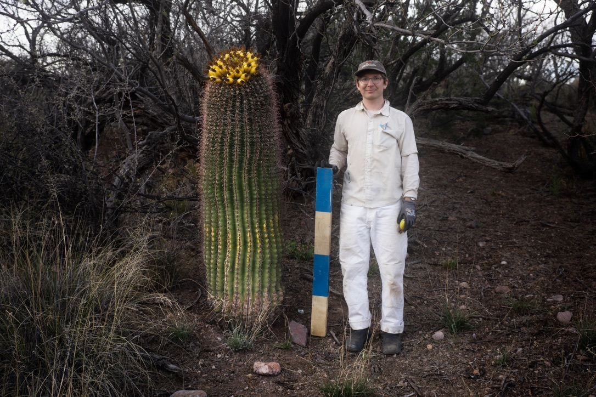
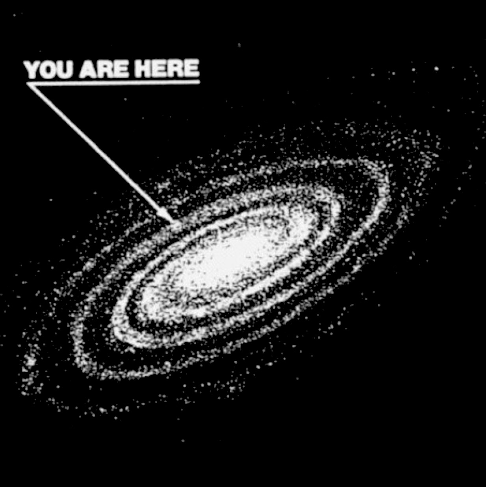
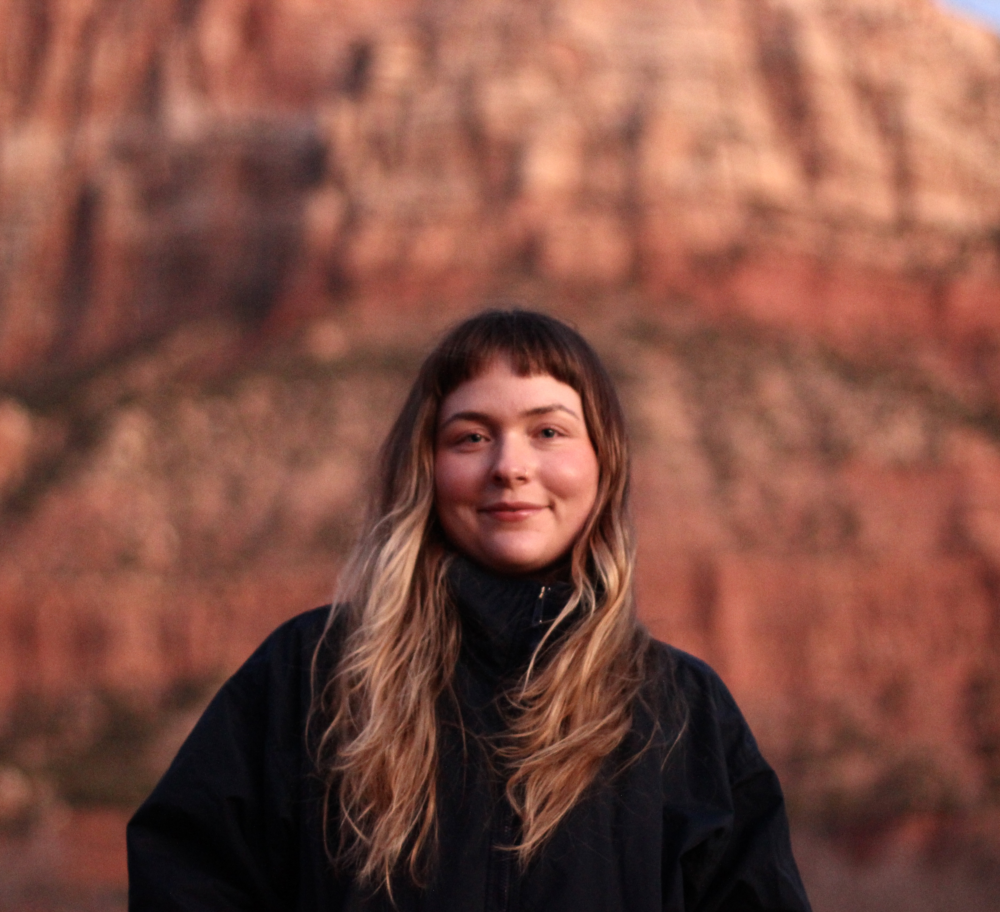
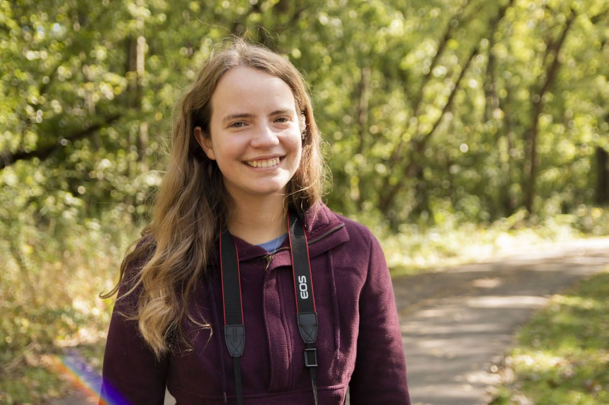
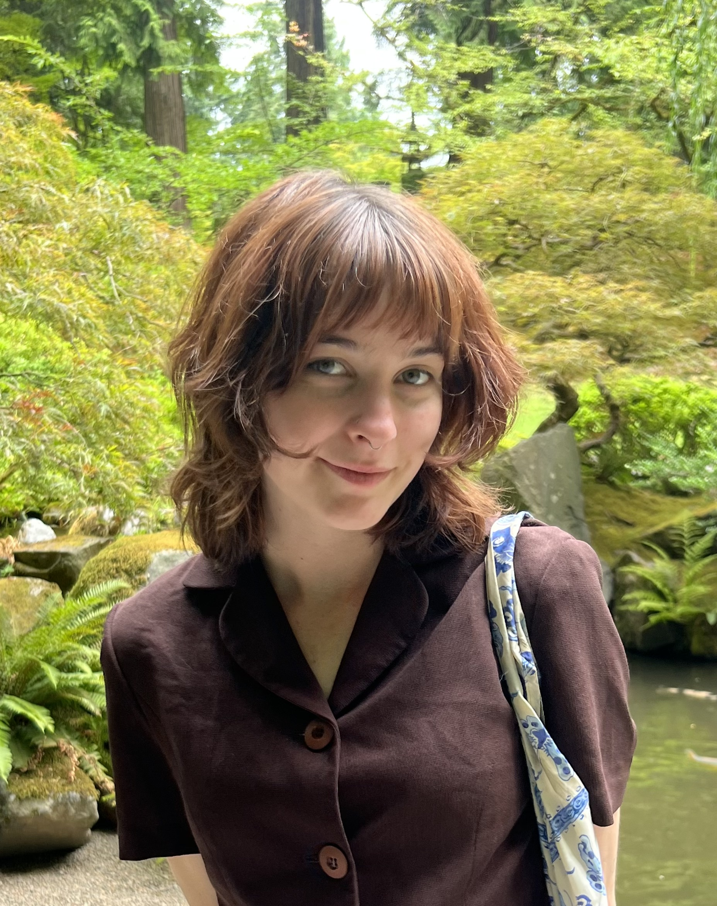

Research Group

Paul J. CaraDonna
Principal Investigator
Chicago Botanic Garden · Northwestern University · Rocky Mountain Biological Laboratory · National Institute for Mathematics in Biology · Catalina Industries
population & community ecology
ecological interactions
creative inquiry
plants & animals
environmental change

Nick N. Dorian
Postdoctoral Associate
Chicago Botanic Garden · Catalina Industries
population ecology
ecology of pollinator gardens
pollinators
creative inquiry
Dylan T. Simpson
Postdoctoral Associate
Chicago Botanic Garden · Rocky Mountain Biological Laboratory · Catalina Industries
population ecology
species interactions
pollinators
environmental change
creative inquiry

Ceci Rigby
MSc. Student
Chicago Botanic Garden · Northwestern University · Rocky Mountain Biological Laboratory
species interactions
diet theory
pollinators
creative inquiry

Caroline Smith
MSc. Student
Chicago Botanic Garden · Northwestern University
ecology of pollinator gardens
Orly Lindner
MSc. Student
Chicago Botanic Garden · Northwestern University · Rocky Mountain Biological Laboratory
phenology
pollinator ecology
Emma Dawson-Glass
PhD Candidate
University of Michigan (Nate Sanders Lab) · Chicago Botanic Garden
ecological interactions
pollination ecology
nutritional ecology
predation
phenology

Emma Coflin
MSc. Student (starting fall 2026)
Chicago Botanic Garden
ecology of pollinator gardens
ecology in urban environments
Mark Dorf
Artist
Electronic Image (NYC) · Rocky Mountain Biological Laboratory
creative inquiry
nature-human-technology relations